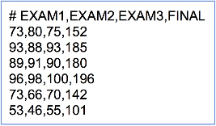
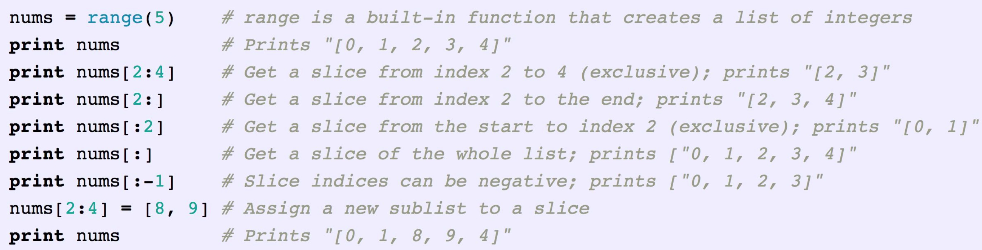
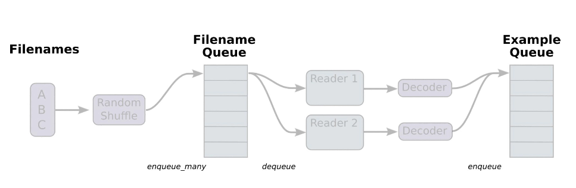

Loading data from file
data-01-test-score.csv
위의 dataset에서 행(row)의 개수가 학생 수 이다. (total instance number = 25)
file_input_linear_regression.py
# Lab 4 Multi-variable linear regression
import tensorflow as tf
import numpy as np
tf.set_random_seed(777) # for reproducibility
xy = np.loadtxt('data-01-test-score.csv', delimiter=',', dtype=np.float32)
x_data = xy[:, 0:-1]
y_data = xy[:, [-1]]
# Make sure the shape and data are OK
print(x_data.shape, x_data, len(x_data))
print(y_data.shape, y_data)
# placeholders for a tensor that will be always fed.
X = tf.placeholder(tf.float32, shape=[None, 3])
Y = tf.placeholder(tf.float32, shape=[None, 1])
W = tf.Variable(tf.random_normal([3, 1]), name='weight')
b = tf.Variable(tf.random_normal([1]), name='bias')
# Hypothesis
hypothesis = tf.matmul(X, W) + b
# Simplified cost/loss function
cost = tf.reduce_mean(tf.square(hypothesis - Y))
# Minimize
optimizer = tf.train.GradientDescentOptimizer(learning_rate=1e-5)
train = optimizer.minimize(cost)
# Launch the graph in a session.
sess = tf.Session()
# Initializes global variables in the graph.
sess.run(tf.global_variables_initializer())
for step in range(2001):
cost_val, hy_val, _ = sess.run(
[cost, hypothesis, train], feed_dict={X: x_data, Y: y_data})
if step % 10 == 0:
print(step, "Cost: ", cost_val, "\nPrediction:\n", hy_val)
# Ask my score
print("Your score will be ", sess.run(
hypothesis, feed_dict={X: [[100, 70, 101]]}))
print("Other scores will be ", sess.run(hypothesis,
feed_dict={X: [[60, 70, 110], [90, 100, 80]]}))result
/* print(x_data.shape, x_data, len(x_data)) */
(25, 3) [[ 73. 80. 75.]
[ 93. 88. 93.] [ 89. 91. 90.] [ 96. 98. 100.] [ 73. 66. 70.]
[ 53. 46. 55.] [ 69. 74. 77.] [ 47. 56. 60.] [ 87. 79. 90.]
[ 79. 70. 88.] [ 69. 70. 73.] [ 70. 65. 74.] [ 93. 95. 91.]
[ 79. 80. 73.] [ 70. 73. 78.] [ 93. 89. 96.] [ 78. 75. 68.]
[ 81. 90. 93.] [ 88. 92. 86.] [ 78. 83. 77.] [ 82. 86. 90.]
[ 86. 82. 89.] [ 78. 83. 85.] [ 76. 83. 71.] [ 96. 93. 95.]] 25
/* print(y_data,.shape, y_data) */
(25, 1) [[152.]
[185.] [180.] [196.] [142.] [101.] [149.] [115.] [175.] [164.] [141.]
[141.] [184.] [152.] [148.] [192.] [147.] [183.] [177.] [159.] [177.]
[175.] [175.] [149.] [192.]]
/* print(step, "cost: ", cost_val, "\nPredicton:\n", hy_val) */
0 Cost: 21027.0
Prediction:
[[22.048063 ] [21.619772 ] [24.096693 ] [22.29302 ] [18.633902 ]
[ 7.2669735] [12.33103 ] [ 3.150511 ] [14.347944 ] [ 4.2534237]
[14.485708 ] [10.678068 ] [28.80464 ] [29.298803 ] [11.237837 ]
[18.646544 ] [31.189451 ] [13.344656 ] [28.841742 ] [25.66281 ]
[15.084753 ] [16.798368 ] [15.924551 ] [31.36112 ] [24.986364 ]]
10 Cost: 95.976326
Prediction:
[[157.11063 ] [183.99283 ] [184.06302 ] [196.52917 ] [142.46274 ]
[ 98.59757 ] [142.77237 ] [ 99.877815] [166.13176 ] [144.8915 ]
[140.14996 ] [134.61139 ] [194.05147 ] [166.64041 ] [142.28706 ]
[183.433 ] [161.97668 ] [169.89073 ] [186.37148 ] [166.61378 ]
[168.04634 ] [169.14368 ] [161.75206 ] [167.48862 ] [193.25117 ]]
20 Cost: 94.25725
Prediction:
[[158.01505] [185.11972] [185.15112] [197.73495] [143.31499]
[ 99.26258] [143.69463] [100.58785] [167.21954] [145.9485 ]
[141.02908] [135.50375] [195.15509] [167.53082] [143.2218 ]
[184.59265] [162.81183] [171.0014 ] [187.41415] [167.54619]
[169.12616] [170.2186 ] [162.77228] [168.35252] [194.40303]]
...
...
1980 Cost: 25.005224
Prediction:
[[154.44972] [185.5582 ] [182.92067] [198.08661] [142.52899]
[103.52673] [146.76907] [106.65733] [172.12329] [157.06076]
[142.54291] [140.1474 ] [190.08316] [159.65169] [147.32379]
[187.25269] [153.39568] [175.3535 ] [181.409 ] [162.16696]
[172.41965] [173.0437 ] [164.7188 ] [158.30646] [192.80391]]
1990 Cost: 24.863274
Prediction:
[[154.4393 ] [185.5584 ] [182.91354 ] [198.08807 ] [142.5247 ]
[103.5393 ] [146.78029 ] [106.679474] [172.13773 ] [157.09564 ]
[142.54805 ] [140.16164 ] [190.06657 ] [159.62555 ] [147.33801 ]
[187.26051 ] [153.36353 ] [175.36987 ] [181.38976 ] [162.15004 ]
[172.43137 ] [173.05208 ] [164.72626 ] [158.27443 ] [192.79778 ]]
2000 Cost: 24.722485
Prediction:
[[154.42894 ] [185.5586 ] [182.90646 ] [198.08955 ] [142.52043 ]
[103.551796] [146.79152 ] [106.70152 ] [172.15207 ] [157.13037 ]
[142.5532 ] [140.17581 ] [190.05006 ] [159.59953 ] [147.35217 ]
[187.26833 ] [153.3315 ] [175.3862 ] [181.3706 ] [162.1332 ]
[172.44307 ] [173.06042 ] [164.7337 ] [158.24257 ] [192.79166 ]]
/* score prediction */
Your score will be [[181.73279]]
Other scores will be [[145.86269] [187.2313 ]]
[참조] Slicing
Queue Runners
Queue Runner는 파일 용량이 커서 메모리에 한번에 올리기 힘들 때 tensorflow에서 제공하는 mechanism
filename_queue = tf.train.string_input_producer(['data-01.csv', 'data-02.csv', ...], shuffle=False, name='filename_queue')
여러개의 정의 된 파일 이름을 이용해서 list에 따라 불러옴reader=tf.TextLineReader()
key,value = reader.read(filename_queue)
key, value로 나누어서 읽겠다는 뜻record_defaults = [[0.], [0.], [0.], [0.]]record_defaults인자를 통해 decoding시 default값을 정해줄 수 있다.
xy = tf.decode_csv(value, record_defaults=record_defaults)
Queue Runner에 대한 자세한 사항은 여기서
tf.train.batch
tf_reader_linear_regression.py (snippets)
# collect batches of csv in
train_x_batch, train_y_batch = \
tf.train.batch([xy[0:-1], xy[-1:]], batch_size=10)
# Launch the graph in a session.
sess = tf.Session()
...(skip)...
# Start populating the filename queue.
coord = tf.train.Coordinator()
threads = tf.train.start_queue_runners(sess=sess, coord=coord)
for step in range(2001):
x_batch, y_batch = sess.run([train_x_batch, train_y_batch])
...(skip)...
coord.request_stop()
coord.join(threads)그 외의 변수와 tensor및 작동 메커니즘에 대한 교수님의 간단한(?) 설명...
batch, coord 그리고 threads를 주목해서 보면 될 것!
그리고 엔간한건 tensorflow에 의해서 자동으로 처리된다고 한다. king god tf...
tf_reader_linear_regression.py (full code)
# Lab 4 Multi-variable linear regression
# https://www.tensorflow.org/programmers_guide/reading_data
import tensorflow as tf
tf.set_random_seed(777) # for reproducibility
filename_queue = tf.train.string_input_producer(
['data-01-test-score.csv'], shuffle=False, name='filename_queue')
reader = tf.TextLineReader()
key, value = reader.read(filename_queue) # value에 csv에서 읽어온 값들이 저장됨
# Default values, in case of empty columns. Also specifies the type of the
# decoded result.
record_defaults = [[0.], [0.], [0.], [0.]]
xy = tf.decode_csv(value, record_defaults=record_defaults)
# collect batches of csv in
# batch는 펌프질을해서 데이터를 갖고오는 과정이라 생각하면 된다.
train_x_batch, train_y_batch = tf.train.batch([xy[0:-1], xy[-1:]], batch_size=10)
# placeholders for a tensor that will be always fed.
X = tf.placeholder(tf.float32, shape=[None, 3])
Y = tf.placeholder(tf.float32, shape=[None, 1])
W = tf.Variable(tf.random_normal([3, 1]), name='weight')
b = tf.Variable(tf.random_normal([1]), name='bias')
# Hypothesis
hypothesis = tf.matmul(X, W) + b
# Simplified cost/loss function
cost = tf.reduce_mean(tf.square(hypothesis - Y))
# Minimize
optimizer = tf.train.GradientDescentOptimizer(learning_rate=1e-5)
train = optimizer.minimize(cost)
# Launch the graph in a session.
sess = tf.Session()
# Initializes global variables in the graph.
sess.run(tf.global_variables_initializer())
# Start populating the filename queue.
# 밑에 두줄은 기본적으로 사용하는 문구라고 보면 됨
coord = tf.train.Coordinator()
threads = tf.train.start_queue_runners(sess=sess, coord=coord)
for step in range(2001):
x_batch, y_batch = sess.run([train_x_batch, train_y_batch])
cost_val, hy_val, _ = sess.run(
[cost, hypothesis, train], feed_dict={X: x_batch, Y: y_batch})
if step % 10 == 0:
print(step, "Cost: ", cost_val, "\nPrediction:\n", hy_val)
# 밑에 두줄 역시 기본적으로 위의 coord변수 선언과 같이 set로 따라다니는 기본 문구라고 보면 편하다.
coord.request_stop()
coord.join(threads)
# Ask my score
print("Your score will be ",
sess.run(hypothesis, feed_dict={X: [[100, 70, 101]]}))
print("Other scores will be ",
sess.run(hypothesis, feed_dict={X: [[60, 70, 110], [90, 100, 80]]}))
결과 창
# result
0 Cost: 7070.982
Prediction:
[[235.22786] [282.40146] [278.39618] [303.9158 ] [214.62396]
[159.15427] [228.5351 ] [170.92645] [264.6505 ] [246.59117]]
10 Cost: 5.577785
Prediction:
[[154.65848] [185.555 ] [182.97673] [199.99612] [140.76091]
[104.69594] [150.7493 ] [113.26346] [174.13757] [162.75192]]
20 Cost: 4.62937
Prediction:
[[154.11101 ] [184.90294 ] [182.33101 ] [199.2954 ] [140.26302 ]
[104.333435] [150.22685 ] [112.87885 ] [173.53265 ] [162.19771 ]]
30 Cost: 4.618964
Prediction:
[[154.10362] [184.90007] [182.32486] [199.29121] [140.26024]
[104.33596] [150.22578] [112.88076] [173.53444] [162.20546]]
40 Cost: 4.612851
Prediction:
[[154.09985] [184.90154] [182.32303] [199.29173] [140.26077]
[104.34094] [150.22823] [112.88527] [173.54027] [162.21696]]
...
1950 Cost: 4.228973
Prediction:
[[153.64238] [185.07217] [182.09341] [199.36737] [140.30066]
[104.95598] [150.56622] [113.50818] [174.26425] [163.6712 ]]
1960 Cost: 4.228953
Prediction:
[[153.64095 ] [185.07262 ] [182.09265 ] [199.36763 ] [140.30061 ]
[104.957886] [150.56744 ] [113.51045 ] [174.26653 ] [163.6759 ]]
1970 Cost: 4.2289743
Prediction:
[[153.63954 ] [185.07306 ] [182.09189 ] [199.36792 ] [140.30058 ]
[104.95979 ] [150.56866 ] [113.512726] [174.26875 ] [163.68057 ]]
1980 Cost: 4.229003
Prediction:
[[153.63815 ] [185.07352 ] [182.09116 ] [199.36818 ] [140.30055 ]
[104.96169 ] [150.5699 ] [113.514984] [174.271 ] [163.68524 ]]
1990 Cost: 4.229022
Prediction:
[[153.63675 ] [185.07394 ] [182.09041 ] [199.36845 ] [140.30052 ]
[104.96358 ] [150.5711 ] [113.517235] [174.27322 ] [163.68988 ]]
2000 Cost: 4.229044
Prediction:
[[153.63535] [185.07439] [182.08965] [199.36871] [140.30048]
[104.96546] [150.5723 ] [113.51948] [174.2754 ] [163.69449]]
/* Ask score */
your score wil be [[185.33531]]
other scores will be [[178.36246] [177.03687]][참조] shuffle_batch
# min_after_dequeue defines how big a buffer we will ranomly sample
# from -- bigger means better shuffling but slower start up and more
# memory used.
# capacity must be larger than min_after_dequeue and the amount larger
# determines the maximum we will prefetch.
# Recommendation :
# min_after_dequeue + (num_threads + a small safety margin) * batch_size
# example code...
min_after_dequeue = 10000
capacity = min_after_dequeue + 3 * batch_size
example_batch, label_betch = tf.train.shuffle_batch(
[example, label], batch_size=batch_size, capacity=capacity,
min_after_dequeue=min_after_dequeue)